Tractor on Uneven Terrain
This example models a row crop tractor on uneven terrain. The scene, driver inputs and rear wheel steering option can be selected.
The tractor model includes a six degree-of-freedom body model, two axles each with heave and roll degrees of freedom, and four wheels that rotate. The front and rear wheels are steered using the Ackermann steering equation. Many of the tractor parameters can be modified using MATLAB.
The tire model is the Magic Formula Tire Force and Torque block from Simscape Multibody. You can plot the forces and torques at the contact patch from the simulation results.
(return to Row Crop Tractor Overview)
Acknowledgements: MathWorks would like to thank M V Krishna Teja, PhD, Virtual Proving Ground and Simulation Lab, Raghupati Singhania Centre of Excellence at the Indian Institute of Technology, Madras for providing the tire parameters for this example.
Contents
- Model
- Tractor Model
- Tire Model
- Powertrain: Torque at Wheels
- Powertrain: Torque at Transmission Output
- Powertrain
- Powertrain Variants
- Powertrain: CVT Abstract
- Powertrain: CVT Hydrostatic
- Powertrain: CVT Electrical
- Powertrain: CVT Power Split Hydromechanical
- Simulation Results from Simscape Logging, Step Steer
- Simulation Results from Simscape Logging, Plateau
- Simulation Results from Simscape Logging, Rough Road
- Simulation Results from Simscape Logging, Four Passes
- Simulation Results from Simscape Logging, Orchard
Model
Tractor Model
The chassis, front and rear suspensions, and tires are modeled in this subsystem. The driveshafts connecting to each wheel are combined into a Simscape Bus which connects to a separate powertrain model. This allows us to combine this chassis model with any form of powertrain (two wheel drive, four wheel drive, and more).
The Scene is also contained in this subsystem. Flat and uneven terrain can be selected using variant subsystems. The scene connects to the wheel center for lookup table-defined terrain, and the tire connects to the surface.

Tire Model
This subsystem models the tire. The tire is connected to the terrain which can be flat or uneven.
Powertrain: Torque at Wheels
In this variant, torque is applied at all four wheels directly. This abstract model of the powertrain runs very quickly for all the complexities of the engine, transmission, and drivetrain have been omitted. This option assumes the engine, transmission and drivetrain are all performing as designed and is very simple to parameterize.
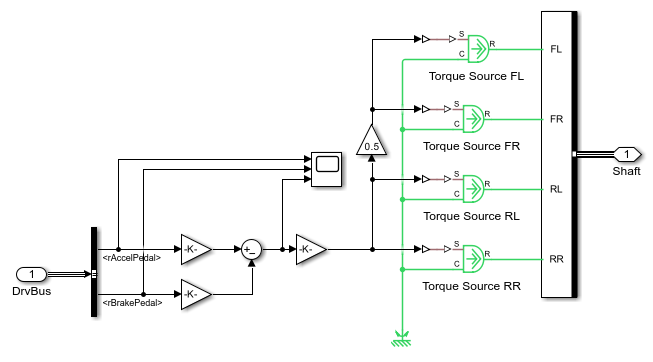Powertrain: Torque at Transmission Output
The engine is modeled as an ideal torque source that can meet any request for torque. The torque is applied to the shaft representing the output of the transmission. Torque is transmitted to all four wheels via the drivetrain.
This subsystem models the driveshafts that connect the output of the transmission to all wheels in a four-wheel drive configuration.
Powertrain
The tractor is powered by an engine. The continuously variable transmission varies its ratio to drive the vehicle at the desired speed.
Powertrain Variants
Four options for modeling the CVT are included in the model. Using variant subsystems, one of them can be activated for a test. The subsystems all have the same interface, which includes a mechanical connection to the engine and a mechanical connection to the driveline. Intefaces based on physical connections are particularly well-suited to swapping between models of different technologies or fidelity.

Powertrain: CVT Abstract
Models a CVT as a variable ratio gear. This model can be used in early stages of development to refine requirements for the transmission. It can also be tuned to match a more detailed model of the CVT so as to provide accurate behavior with less computation.

Powertrain: CVT Hydrostatic
Hydrostatic transmission with variable-displacement pump and fixed-displacement motor. This system alone can also serve as a CVT, but it is not as efficient as the power-split design, as the mechanical path has a higher efficiency.
Powertrain: CVT Electrical
Electrical transmission with generator, motor, and battery. A control system adjusts the power flow between the motor and the generator. The control system enables these components to act as a variable ratio transmission.
Powertrain: CVT Power Split Hydromechanical
Transmission with four planetary gears, clutches, and a parallel power path through a hydrostatic transmission. A hydraulic regenerative braking system is also included to improve fuel economy by storing kinetic energy as pressure in an accumulator.
Simulation Results from Simscape Logging, Step Steer
The plot below shows the wheel speeds during the maneuver. The rotational wheel speeds are scaled by the unloaded radius so they can be compared with the translational speed of the tractor. Additional plots below show tractor position, body roll angle, body pitch angle, and tire normal forces.
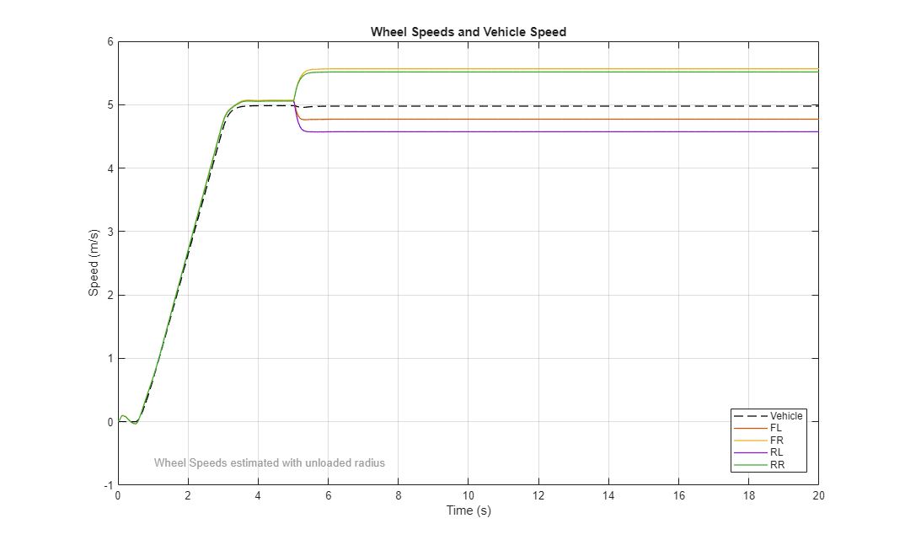 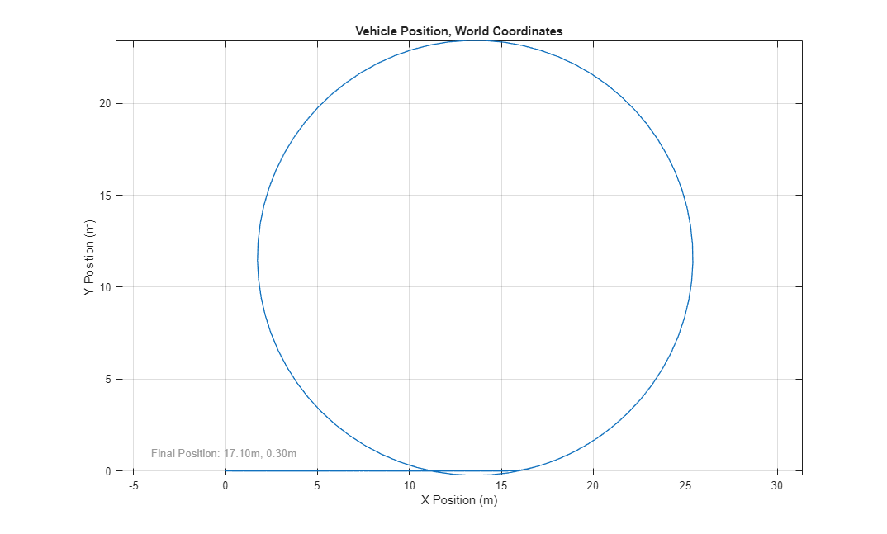 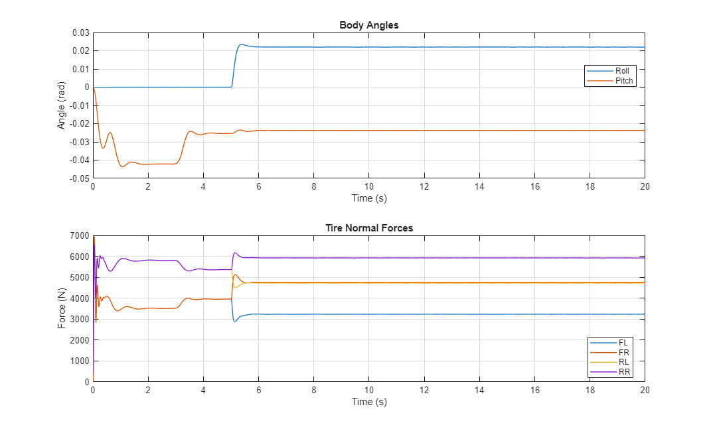Simulation Results from Simscape Logging, Plateau
In this maneuver, the tractor drives up a hill and down the other side. Additional plots below show body roll angle, body pitch angle, and tire normal forces.
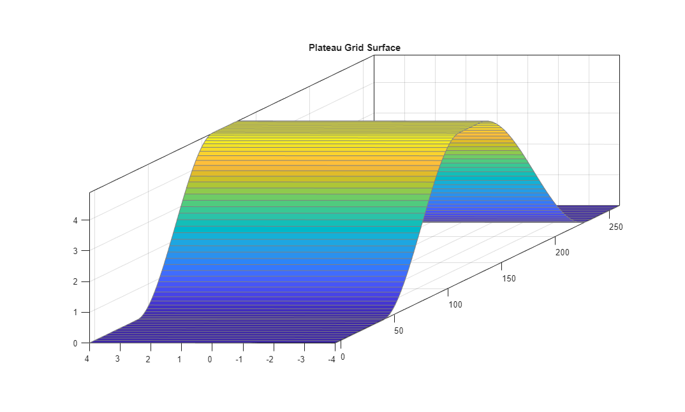 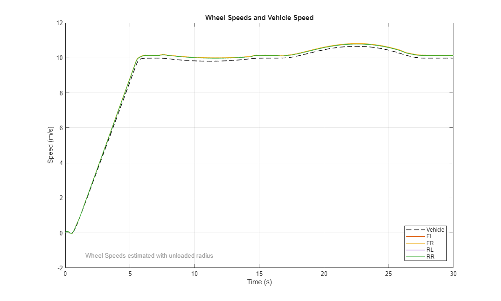Simulation Results from Simscape Logging, Rough Road
In this maneuver, the tractor is in motion at the start of the simulation. It drives along an uneven road which exercises the suspension and causes the car to pitch and roll. Additional plots below show body roll angle, body pitch angle, and tire normal forces.
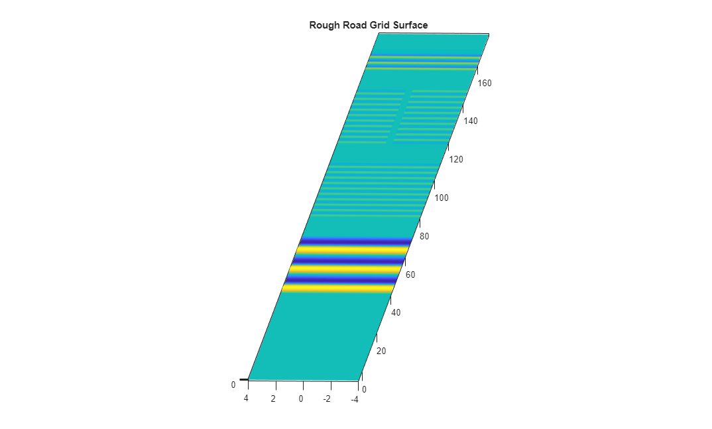 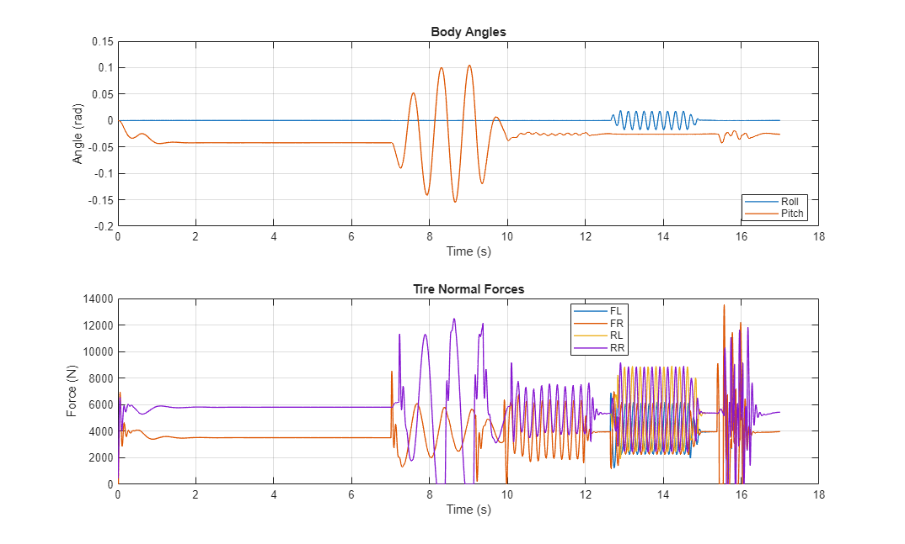Simulation Results from Simscape Logging, Four Passes
In this maneuver, the tractor follows a trajectory in a field. The driver attempts to follow the path. Depending on the options for steering, it may be able to follow the trajectory exactly. For some steering options, the curvature of the path is too sharp and some of the passes in the field will be missed.
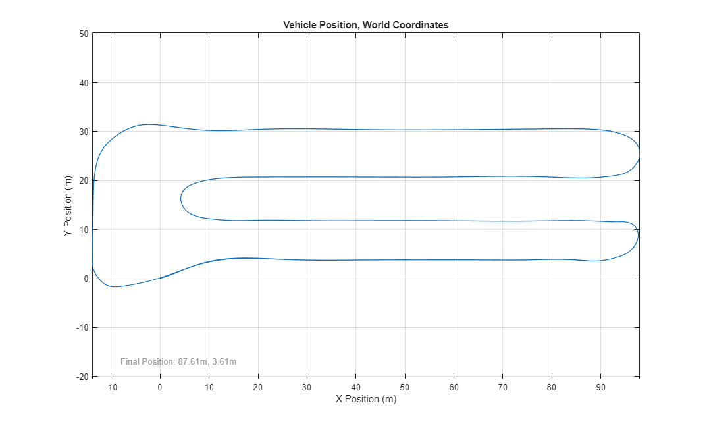 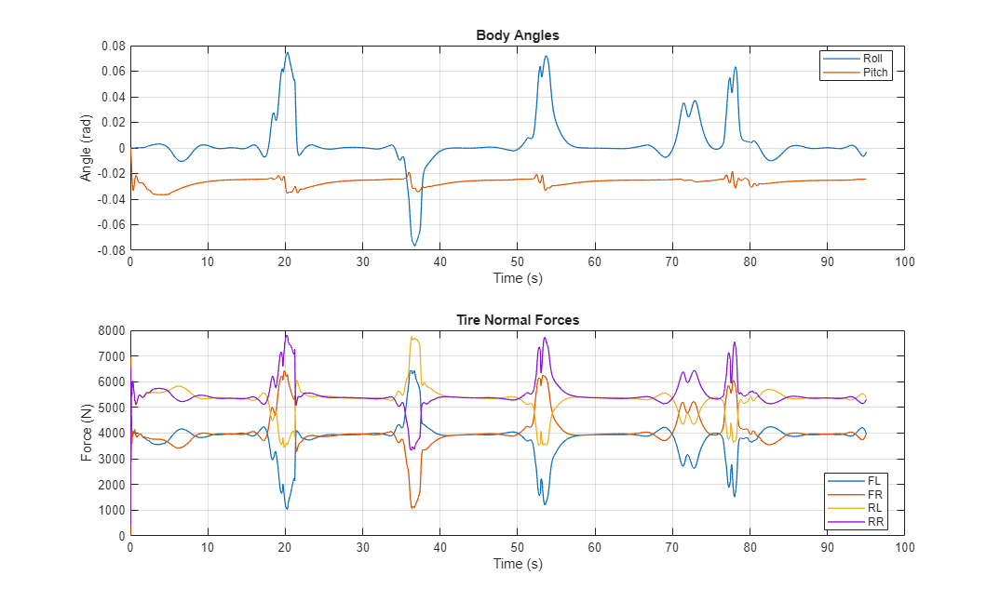Simulation Results from Simscape Logging, Orchard
In this maneuver, the tractor follows a path on uneven terrain. The terrain is specified using the Grid Surface block. Using "Weighted Penetration" option on the tire model enables the variable-step simulation to run much faster than option "Closest Point".
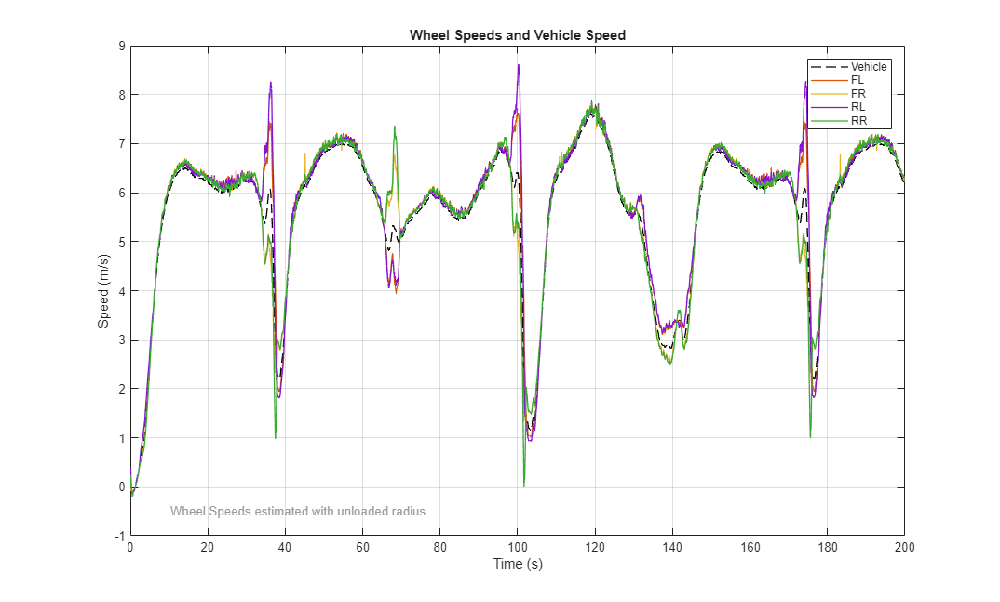 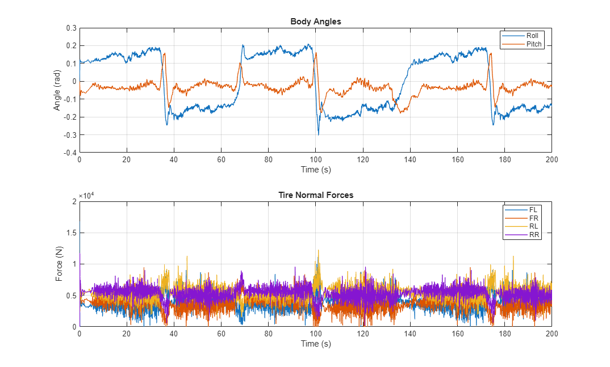